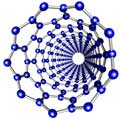

| |

If you came here by accident, my main website has a selection of nanotechnology related
images and a brief
guide to nanotechnology.
Nanoscience Video
What is Nanotechnology? There are now several CDROMs, DVDs and Webstreams available, many for free, providing
good coverage of this:
Nanoscience brochures
Nanoscience related images
Here are some other links to nano - art galleries on the Web, some more realistic than others!
Nanoscience related software
- CaGe - really nice fullerene generator
- JNano - Steffen Weber's java applet to generate nanotubes and cones
- JMol, java based molecular viewer (designed to replace Chime).
- V Sim, a freeware visualiser package
- Rasmol, the old classic molecular structure viewer
- Ernst's nanotube viewer, another java applet.
Miscellaneous other links
- Bad Science: The rather brilliant weekly Guardian column exposing dodgy media
coverage of science; only occasionally about nanoscience, but always a good read.
The way home
If you want to see more objects from the nanoscale, feel free to have
a look around my nanoscience image gallery. All
images ©2003 Chris Ewels, please do not use without permission.
Credits.
|
|